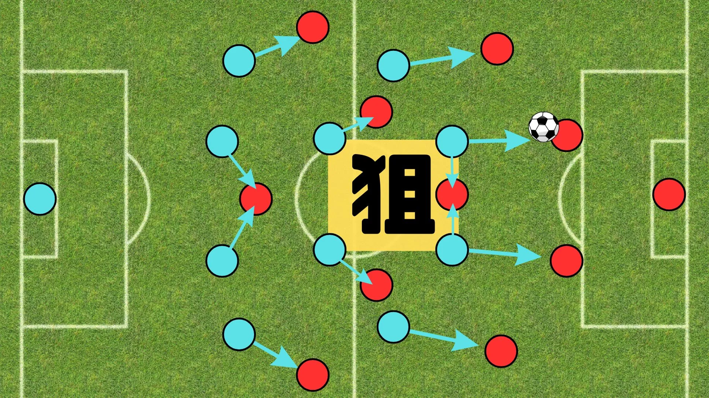
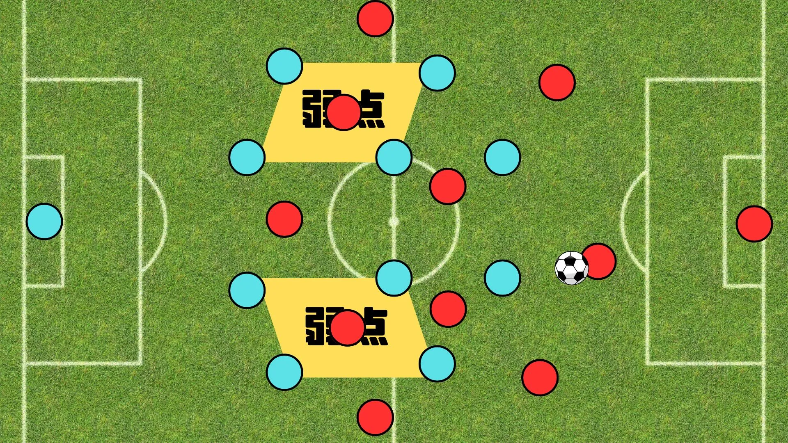
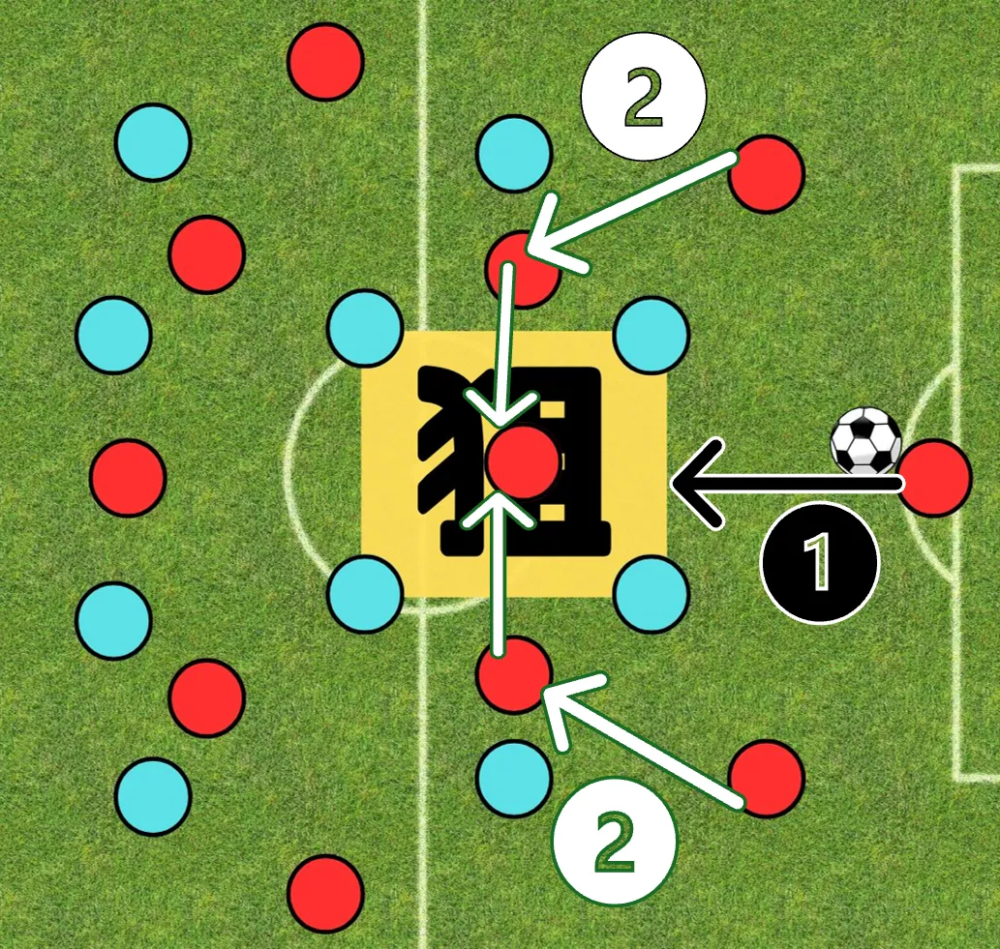
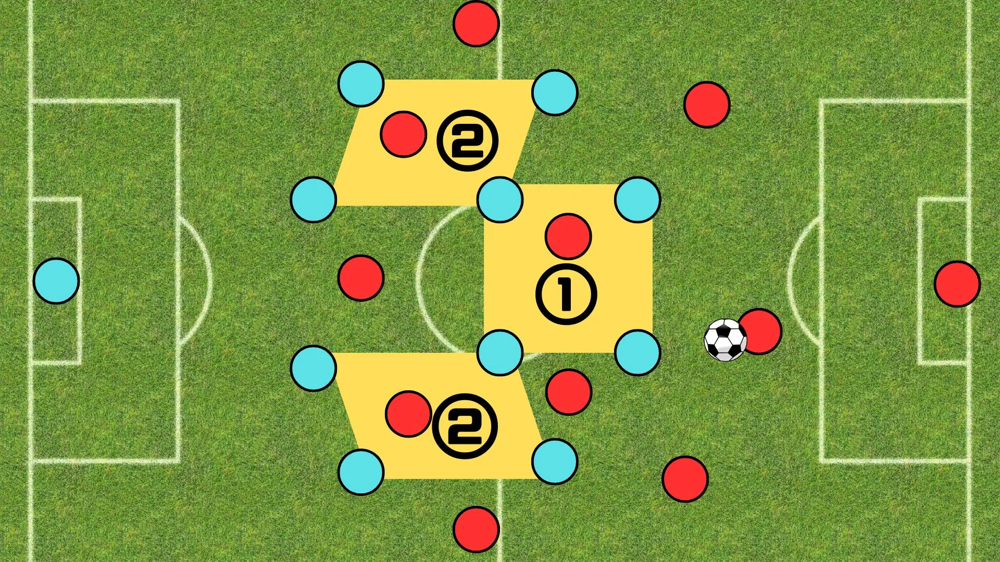

4-4-2プレスに対するビルドアップ

この記事では、4-4-2プレスの攻略法を紹介します。
戦術を発動するには、指導者が戦術を理解し、それを選手に落とし込まなければいけません。
そのため、選手伝達用のPDFファイルを無料配布しています。
プリントアウトして渡していただけると助かります。

目 次
1. 4-4-2プレスとは？
4-4-2は、攻守万能なシステムであるため採用数も多く、コンパクトでバランスの取れた守備陣形を崩すのは困難です。
しかし、構造上必ずできるスペースがあるので、そこをどのように突いていけばよいのか解説します。
4-4-2プレスの強点。
＜サイドへのスライド＞
4-4-2は、コンパクトなブロックを形成しながらサイドに追い込もうとしてきます。
そのため、サイド攻撃に固執すると確実にはハマります。
➡中央のスペースを使って前進する。
4-4-2プレスの弱点。
＜弱点A：中盤ボトム（ビルドアップ側から見た）＞

上図では4-4-2プレスに対して、4-1-4-1ビルドアップを採用していますが、これではプレスの対象が明確化されてサイドでハメられます。
➡３CB化してプレス対象を曖昧にさせる。
＜弱点B：ハーフスペース＞

4-4-2のハーフスペースでボールを持てると、サイドとCFの2つのパスコースを持ちつつ、一気に前進できます。
2. 4-4-2プレスの攻略法（3-4-3ビルドアップ）。
この章では、4-4-2プレスを攻略する際の、具体的なシステムである3-4-3ビルドアップを解説します。
4-4-2プレスの攻略法をアウトプットしやすくするために、合言葉を作成しました。
【合言葉：3CBによる中盤ボトムを利用したビルドアップ。】
チームに落とし込む際は、複雑になりすぎないよう簡潔に伝えることも重要です。
キーパーを含めたビルドアップ

＜目的＞
弱点A（中盤ボトム）を使って前進する。
＜タイミング＞
ビルドアップ初期（ゴールキック直後やキーパーへのバックパス後）に使用。
＜目標＞
①GKから直接、中盤ボトム（黄色）につける。
②CBから直接、またはMFを経由して中盤ボトム（黄色）につける。
＜理由＞
・中盤ボトム（黄色）が、前進するためのパスコースが一番多いから。
・中盤ボトムに出すことで、相手CMF、DMFが食いつき、前線の選手にスペースを与えられるから。
キーパーを含めないビルドアップ

＜目的＞
弱点B（ハーフスペース）を狙う。
＜タイミング＞
ビルドアップ中、後期（キーパーが参加するとリスクが高いとき）に使用。
＜目標＞
①中盤ボトム（①）につける。
②ハーフスペース（②）に直接、またはCFを経由してつける。
＜理由＞
・ハーフスペースに渡れば、サイド、CFへのパスコースを持ちながら前進し、ドリブル、シュートの選択肢まで持てる。
・①につけるのは、相手MFをつり出し、②やCFに渡りやすくするため。
3. 無料配布用PDF。
4. まとめ。
- 4-4-2プレスに対しては、3CBによる中盤ボトムを利用した3-4-3ビルドアップ。
- ハーフスペースを使って一気に前進。
このサイトでは、チーム練習と個人練習の2つに分けて、厳選された練習メニューをまとめています。
悪い意味での「伝統的な練習」への疑問。ただボールを蹴るだけの自主練。敗れる理由もわからない無策のチーム。
そんな悩みを解決するためにこのサイトを作り上げました。
蹴練場は日本全国のサッカーファミリーを応援しています。